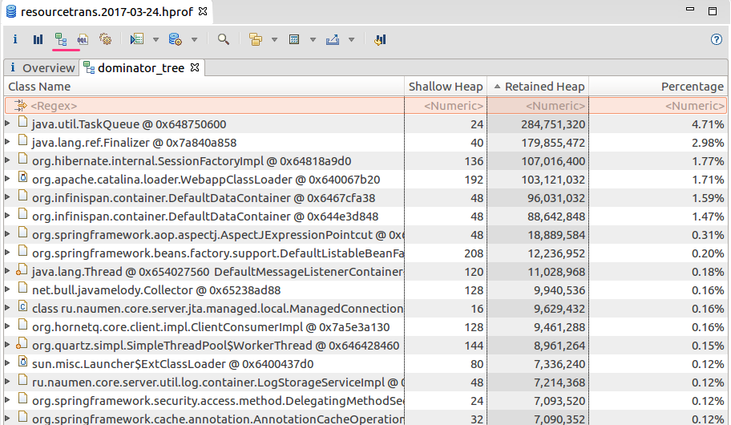
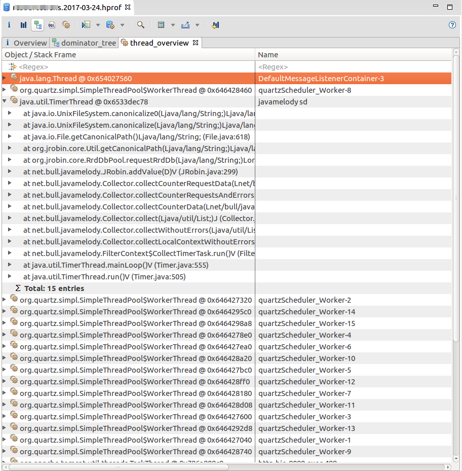
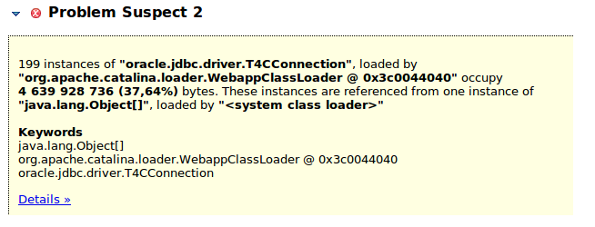

Java HotSpot(TM) 64-Bit Server VM (25.60-b23) for linux-amd64 JRE (1.8.0_60-b27) Memory: 4k page, physical 4046656k(3469764k free), swap 131068k(131068k free) CommandLine flags: -XX:InitialHeapSize=2684354560 -XX:+ManagementServer -XX:MaxHeapSize=2684354560 -XX:MaxMetaspaceSize=402653184 -XX:+PrintGC -XX:+PrintGCDateStamps -XX:+PrintGCDetails -XX:+PrintGCTimeStamps -XX:ReservedCodeCacheSize=104857600 -XX:ThreadStackSize=512 -XX:-TieredCompilation -XX:+UnlockCommercialFeatures -XX:+UseCompressedClassPointers -XX:+UseCompressedOops -XX:+UseParallelOldGC 2017-03-31T06:37:04.396+0000: 15.909: [GC (Allocation Failure) [PSYoungGen: 764409K->109038K(551424K)] 892078K->304714K(2299392K), 0.1895485 secs] [Times: user=0.22 sys=0.01, real=0.19 secs] 2017-03-31T06:37:07.514+0000:19.027: [GC (Metadata GC Threshold) [PSYoungGen: 506766K->51971K(494592K)] 702442K->270793K(2242560K), 0.0514184 secs] [Times: user=0.08 sys=0.01, real=0.05 secs] 2017-03-31T06:37:07.565+0000:19.078: [Full GC (Metadata GC Threshold) [PSYoungGen: 51971K->0K(494592K)] [ParOldGen: 218821K->72091K(1747968K)] 270793K->72091K(2242560K), [Metaspace: 20842K->20842K(1069056K)], 0.1548107 secs] [Times: user=0.25 sys=0.01, real=0.16 secs]
Настройка регионов памяти: Heap
-Xmx1g -Xms100m
Размеры "поколений
-XX:NewSize=100m -XX:MaxNewSize=200m -XX:NewRatio=3
Настройка регионов памяти: Metaspace
-XX:MaxMetaspaceSize256 -XX:MetaspaceSize=100M
Включение логирования сборки мусора
-Xloggc:gc.log -XX:+PrintGCDetails
Формирование дампа памяти
-XX:+HeapDumpOnOutOfMemoryError
// Dummy Entity representing usual data objects
private static class Entity {
public String name;
public String detail;
public Double amount;
public Integer age;
}
// Linked list offers table inserts and helps illustrating the issue by using multiple
// references per entry
public static java.util.LinkedList<Entity> entities =
new java.util.LinkedList<>();
// This threshold ensures the loop stops before a full GC happens.
private static final int MB = 1024 * 1024;
private static final int THRESHOLD = 100 * MB;
public static void main(String[] args) {
System.out.println("Total Memory (in bytes): " + Runtime.getRuntime().totalMemory());
System.out.println("Free Memory (in bytes): " + Runtime.getRuntime().freeMemory());
System.out.println("Max Memory (in bytes): " + Runtime.getRuntime().maxMemory());
while (true) {
entities.add(new Entity());
System.out.println("entities.size() = "+entities.size());
}
}
java -Xms31g -Xmx31g -Xmn50m Memory
java -Xms32g -Xmx32g -Xmn50m Memory
java -Xms31g -Xmx31g -Xmn50m Memory entities.size() = 587889429
java -Xms32g -Xmx32g -Xmn50m Memory entities.size() = 385481085
-XX:+UseCompressedOopsСжатые указатели в Metaspace
-XX:+UseCompressedClassPointers
StringBuilder builder = new StringBuilder();
WeakReference<StringBuilder> weakBuilder =
new WeakReference<StringBuilder>(builder);
//weakBuilder.get();
java.lang.OutOfMemoryError: Metaspace
Причины:
Причины:
2017-03-31T11:53:51.508+0300: 3451601,620: [GC (Metadata GC Threshold) [PSYoungGen: 52266K->3757K(3037696K)] 5825099K->5822635K(16669184K), 0,0295066 secs] [Times: user=0,00 sys=0,00, real=0,03 secs] 2017-03-31T11:53:51.538+0300: 3451601,650: [Full GC (Metadata GC Threshold) [PSYoungGen: 3757K->0K(3037696K)] [ParOldGen: 5818878K->5789982K(13631488K)] 5822635K->5789982K(16669184K), [Metaspace: 343702K->342987K(1519616K)], 2,5744845 secs] [Times: user=38,51 sys=0,00, real=2,58 secs] 2017-03-31T11:53:54.113+0300: 3451604,225: [GC (Last ditch collection) [PSYoungGen: 0K->0K(2941440K)] 5789982K->5789982K(16572928K), 0,0220191 secs] [Times: user=0,29 sys=0,00, real=0,02 secs] 2017-03-31T11:53:54.135+0300: 3451604,247: [Full GC (Last ditch collection) [PSYoungGen: 0K->0K(2941440K)] [ParOldGen: 5789982K->5785960K(13631488K)] 5789982K->5785960K(16572928K), [Metaspace: 342987K->342630K(1519616K)], 5,1649435 secs] [Times: user=78,75 sys=4,60, real=5,17 secs] 2017-03-31T11:53:59.353+0300: 3451609,465: [GC (Metadata GC Threshold) [PSYoungGen: 37985K->10770K(3038720K)] 5823946K->5796730K(16670208K), 0,0240264 secs] [Times: user=0,30 sys=0,05, real=0,02 secs]
Визуализатор gc.log
gceasy.ioВыполнение диагностических команд JVM. В случае если JVM еще "жива".
jcmd <pid> <command>
Нужные комманды:
Снятие heap только с достижимыми(живыми) объектами
jmap -dump:live,format=b,file=/tmp/dump.hprof <pid>
Снятие полного дампа со всеми объектами
jmap -dump:format=b,file=/tmp/dump.hprof <pid>
Инструмент анализа дампа памяти JVM
Dominator tree
Threads
Leak suspects
